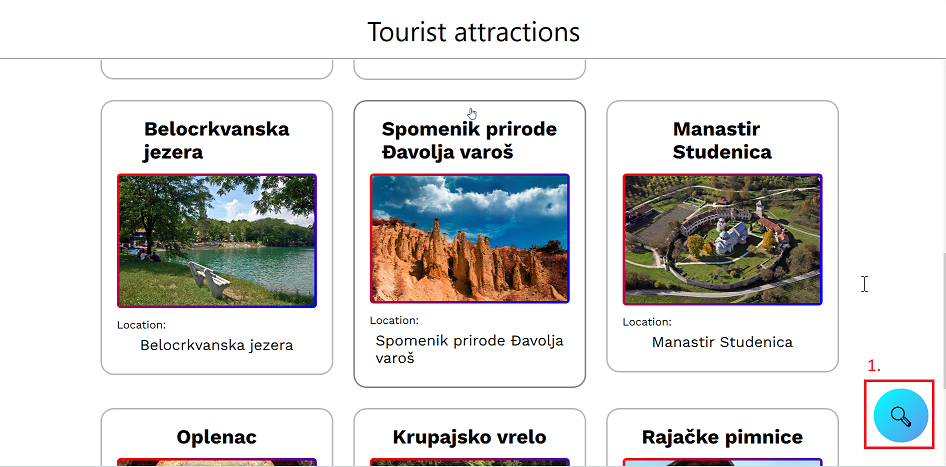
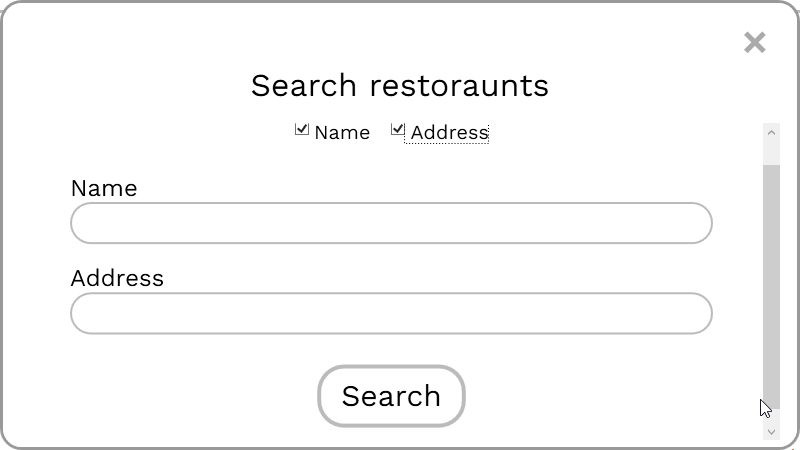
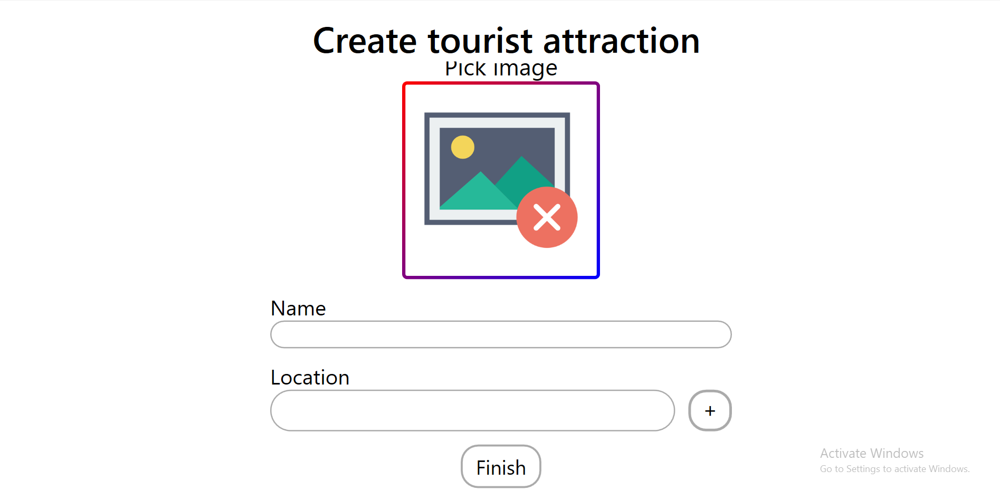
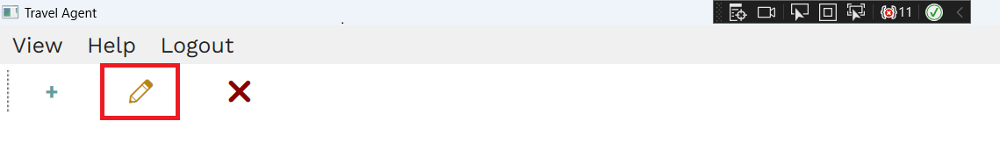
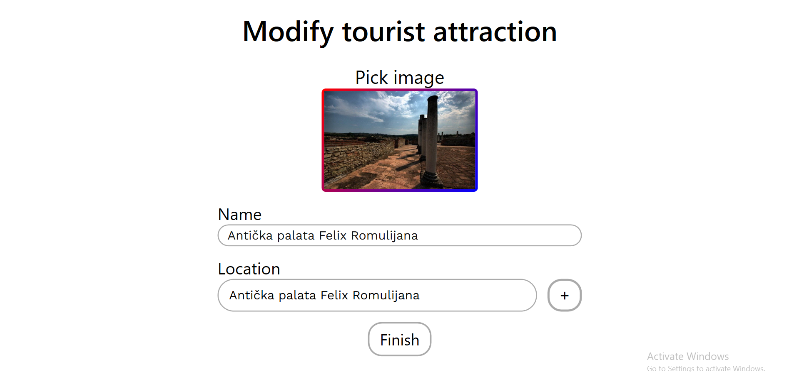
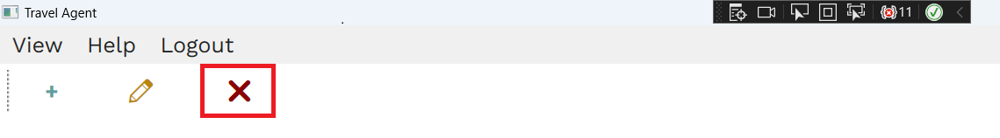

Tourist Attractions Help
Understanding "Tourist Attractions" Page
On the page "Tourist attractions" you can find information about various tourist attractions. Each attraction is shown with a picture, name and place to get an overview of what's on offer.
1. By clicking on the blue icon in the bottom right corner, you can search tourist attractions by specific fields, which are name and location.
Add

Clicking on the highlighted button will open the tourist attraction creation window

It is necessary to enter a picture of the restaurant, the name of the restaurant, star rating and the location where the restaurant is located (select from the map by double clicking).
Edit
After selecting a tourist attraction, clicking on the highlighted button will open the tourist attraction editing window
This option enables you to change already existing values set for a tourist attraction, all of the fields are the same as in the creation window just with already set values. To see field explanations go to Add
Remove
After selecting a tourist attraction, clicking on the highlighted button will open the deletion dialog, asking you if you wanted to permanently delete this tourist attraction